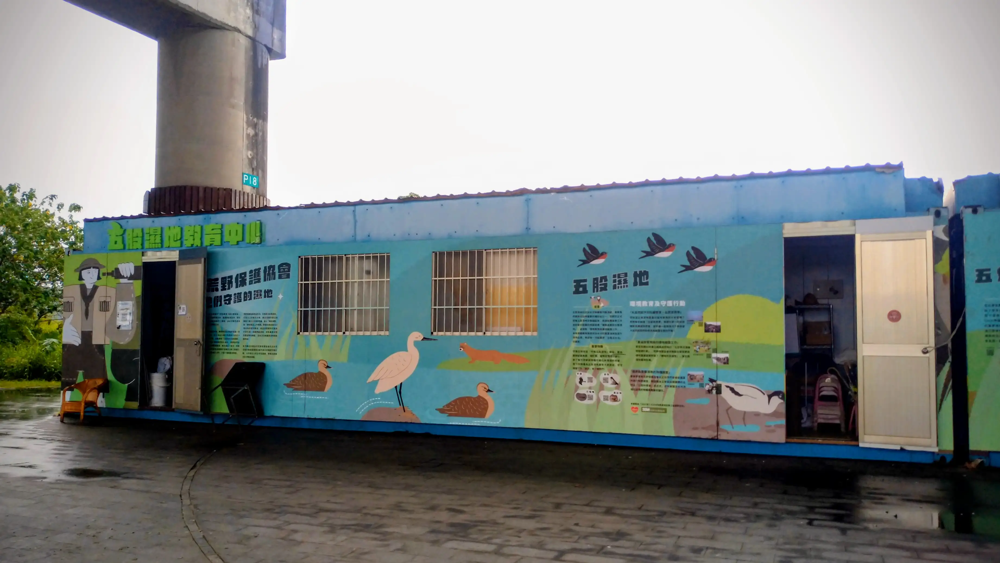

關於五股濕地：國家級重要濕地
「五股濕地」為國家級重要濕地，面積約177公頃，是個受到潮汐影響的內陸濕地。
五股濕地之所以形成，包含了人為與自然原因。因著河道拓寬與疏洪道開闢等政策，使五股濕地意外誕生。雖然曾經受到嚴重的環境破壞，甚至一度從濕地名單中除名，但經歷了大家的守護與努力，重新使五股濕地成為動物、植物的樂園。
地理位置介紹
五股濕地位於新北市五股區與蘆洲區交界處，緊鄰淡水河，又被稱為「二重疏洪道」或「新北大都會公園」。
五股濕地由水域、灘地與樹林組成的大片地域，其中有不少步道、自行車道、橋樑與觀景台。
五股濕地教育中心是個位於「成蘆橋」下方的貨櫃屋，是荒野保護協會在五股濕地的據點，也是五股濕地各種棲地工作或生態導覽的重要基地！

歷史介紹
乾隆年間｜渡海落腳洲仔尾
福建泉州陳氏家族渡海來到洲仔尾，當時還是一片未開發的荒原。
由於鄰近淡水河，土地肥沃、水路交通皆便捷。
清朝末年｜洲仔尾芋，台北路
經過長期的努力耕作，荒地成了畝畝良田。
出產的芋頭聞名了台北城，贏得了「洲仔尾芋，台北路」的俚語。
日治時期｜椪柑名揚海外
鄰近淡水河且缺乏堤防，偶有水災但退得快。
盛產稻米、蔬菜與水果，是大台北地區的糧倉。
盛產椪柑，甜度高、果實大，甚至外銷到日本及大陸。
民國40-60年代｜河道拓寬，五股濕地意外誕生
當時土壤肥沃，依然盛產稻米、蔬果，但夏季時颱風卻因洪水無法宣洩導致淹水。
民國53年，政府實施河道拓寬工程，分別挖除及炸毀使河道狹窄的「獅子頭」與「鳥踏石」兩顆大石。
河道拓寬後，淡水河洪水可順利出海，但也因此失去天然屏障，導致風災時海水倒灌。
地勢低漥加上潮水不停漲退，長期淡鹹水浸泡，土質無法耕種，五股濕地因而形成。
民國60-80年代｜水鳥樂園，盛況空前 / 開闢疏洪道，洲後村拆遷
濕地上處處可見水鴨、漁人、扁舟，曾經紀錄94種鳥類，數量高達四千八百多隻。
民國73年，政府徵收洲仔尾部分土地為洩洪區，開闢二重疏洪道。
民國69年以後的四、五年裡， 洲後村村民為反對拆遷，不斷陳情、示威。
民國73年8月16日清晨，怪手開挖，洲後村被迫拆遷。
民國80年代｜環境破壞，水鳥不再
五股工業區興建，廢土、廢水、垃圾相繼入侵，環境嚴重污染，水鳥數量銳減。
民國90年代至今｜荒野攜手復育，濕地改頭換面
民國86年起，台北縣政府進行七百甲河濱綠地整建計劃，由荒野保護協會等民間保育團體等組成的「疏洪道生態保育聯盟」推動生態保育與棲地重建營造。
民國93年11月11日，荒野保護協會正式認養「五股濕地生態園區」至今，推動復育、保育及教育的工作。
託管關係簡述
五股濕地為國有土地，由新北市政府高灘地工程管理處管理，
而實際的生態維護及保育則由從 2004 年開始認養的「社團法人中華民國荒野保護協會」負責！
交通方式
捷運
搭乘「中和新蘆線」至「蘆洲站」下車→
從一號出口離開捷運站→
沿「三民路」往「成蘆橋」方向步行→
沿「二號越堤道」越過堤防，往成蘆橋方向步行→
抵達成蘆橋下方後沿著橋樑向前步行→
過馬路後即可見到五股濕地教育中心
公車（於蘆洲下車）
沿「三民路」往「成蘆橋」方向步行→
沿「二號越堤道」越過堤防，往成蘆橋方向步行→
抵達成蘆橋下方後沿著橋樑向前步行→
過馬路後即可見到五股濕地教育中心
公車（於五股下車）
至「成州國小」或「五股郵局」下車→
沿「凌雲路一段」往堤防方向步行→
過疏洪北路上堤防，沿自行車道往成蘆橋步行→
即可見到五股濕地教育中心
互動地圖（可點擊紅色標記查看說明）